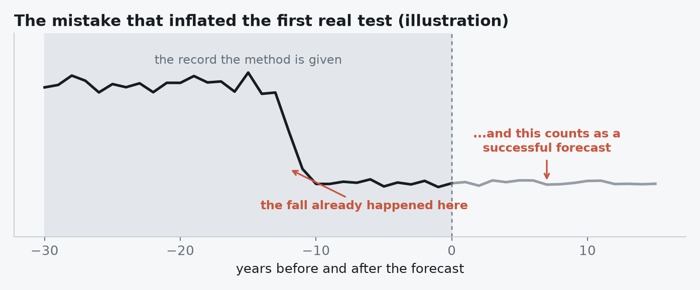
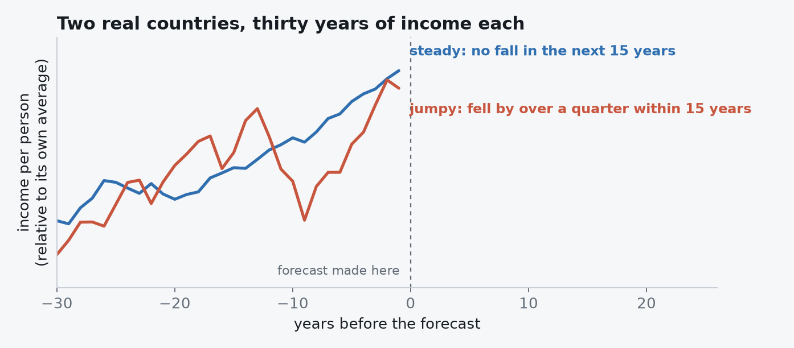
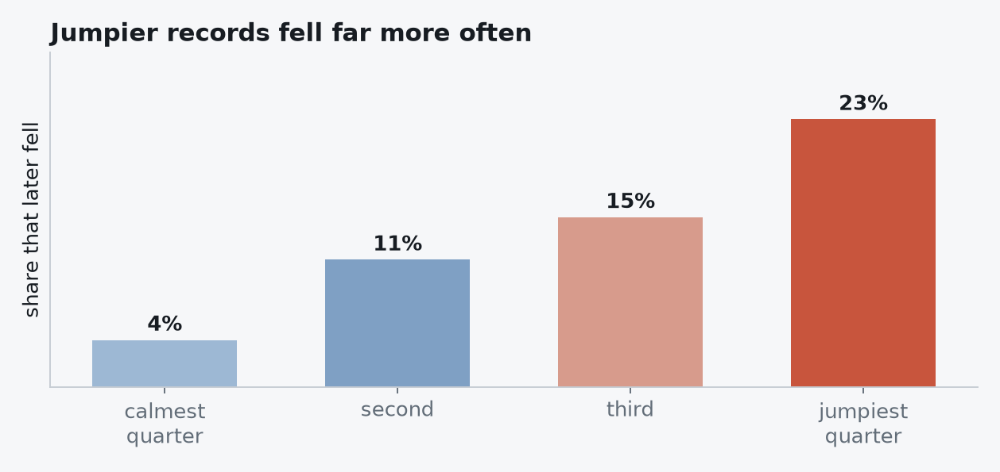
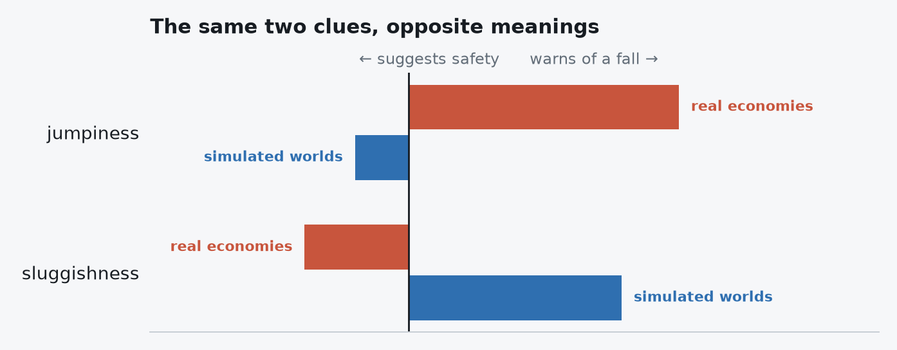

Eight ideas from a blinded study of whether a society's sudden change can be forecast before it happens — and why a careful simulation taught its methods a rule that turned out to be backwards.
The question is whether a sudden change in a society — a collapse, the onset of boom-and-bust cycles, a shift to some new normal — can be anticipated from data gathered before it happens.
History cannot settle that on its own. We rarely know what truly caused a past collapse, and there are few clean cases to learn from. So the study begins with invented societies: thousands of them, each following rules I chose, each with a known future. A method is shown only the early part of a society's life and asked what comes next. Because I made the worlds, I can grade the answers exactly.
Three questions, in rising order of ambition. Is a change coming at all? When will it arrive? And what kind of change will it be?
The danger with invented data is that a method can score well without detecting anything real. If the societies destined to collapse happen to be larger, or noisier, or measured for longer, a method can simply notice that and look clever.
So the project carries a standing check: can the answer be guessed from things that ought to be irrelevant — the overall size of the numbers, how much they wobble, how long the record runs? Whenever the answer was yes, that was a bug in my world-building, not a finding. It happened nine times, and each time I fixed the generator and reran everything.
Remember this one. It turns out to be the hinge of the whole story.
I built both the methods and the tests, which is exactly the arrangement where someone fools themselves without noticing: run a method, glance at the score, adjust something, run again, and forget that the adjusting was steered by the glancing.
The guard is procedural. Before each test I wrote down what I expected, in numbers. The answers went into a sealed file. Every forecast was fingerprinted and published before anything was opened. The order of those events is recorded permanently, so anyone can confirm the forecasts existed before the answers did.
It earned its keep. It caught me predicting wrongly several times, and once stopped me from quietly adjusting the simulation after a method I expected to work didn't.
Whether a change was coming turned out to be moderately forecastable. Given one society that changed and one that didn't, the best method ranked them correctly about four times in five.
But look at how it managed that, and the achievement shrinks. It was recognising societies that already sat close to the edge — not watching a change approach. Where the change had no antecedents at all, such as a sudden shift in the rules, nothing was foreseen, which is exactly as it should be.
Timing was a wall. No method dated a change better than simply knowing the window in which changes tend to happen. A direct measurement showed why: a record tells you how far a slow change has already travelled, and nothing about when the threshold will be crossed.
And the famous warning sign from ecology — that systems recover more sluggishly just before they tip — scored no better than a coin flip in every single condition. The signal genuinely exists inside these worlds. It is just undetectable in records this short, because stable societies throw up the same apparent pattern by chance often enough to bury it.
Then to real history: the territory held by three hundred historical states, and whether each lost half its land or vanished within the following fifty years. Another assistant downloaded and anonymised everything, so I never knew which state was which and could not quietly forecast what I already knew.
At first it looked like a success. Then I noticed how "collapse" had been defined: a fall to less than half of the recent peak. For some states that fall had already happened inside the record the method was handed. Of thirty-six such cases, thirty-five counted as collapses. The method was being congratulated for noticing a catastrophe already printed in its own data.

Take those cases out, and everything drops to chance. Nothing predicted which states would disappear — the outcome closest to what people mean by collapse.
Territory is thin evidence: borders get redrawn on a historian's map, and the record changes only when someone redraws it. So the next test used the densest long-run measure available — income per person, year by year, for seventy-four countries — asking whether income would fall by at least a quarter from its recent peak within fifteen years.
Here a plain model fitted to real history did work, getting the ranking right about seven times in ten. And what it keyed on was not subtle.


Economies that lurch from year to year, with little average growth, fell often. Steady growers rarely did. That is intuitive enough that it barely sounds like a finding — until you compare it with what the invented worlds taught.
The methods trained on my invented societies performed worse than a coin flip on real income. Not merely useless — reliably wrong, which takes some doing.

Here is why, and it comes straight back to the cheating problem. To stop methods identifying a society's fate from how noisy its record was, I had equalised the jumpiness across all my invented worlds. It was the right call for the integrity of the benchmark. But it deleted, by construction, the one clue that matters in reality.
What remained for a method to learn was the sluggish-recovery signal — which makes a record look smoother as danger approaches. So the simulation taught: smooth means danger. Reality says: smooth means safe, jumpy means danger. Apply the first rule to the second world and you land below chance.
My anti-cheating measure removed the only clue that mattered — and I could not have discovered that from inside the simulation. Only real data could show it.
One weakness deserves naming before anyone repeats this. A "fall of a quarter from the recent peak" is a threshold defined relative to the record itself — and a jumpy series crosses such a threshold more easily simply by being jumpy. So some of the headline result may be mechanical rather than meaningful. Before leaning on it, I'd redefine the event so that jumpiness cannot win by accident, and see what survives.
Two things I'd stand behind regardless. A method validated on simulated data should not be assumed to work on reality: here the transfer was not weak but inverted. And a collapse threshold measured against a recent peak will manufacture apparent skill unless you exclude the cases that have already crossed it.
The rest — the machinery of sealed answers, fingerprinted forecasts and written predictions — exists so that findings like these can be distinguished from well-organised hindsight. That part worked.